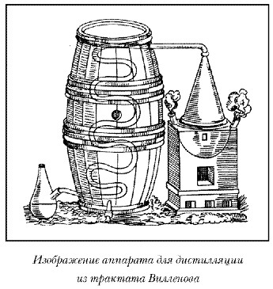
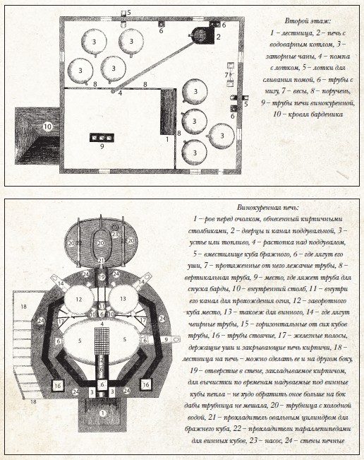
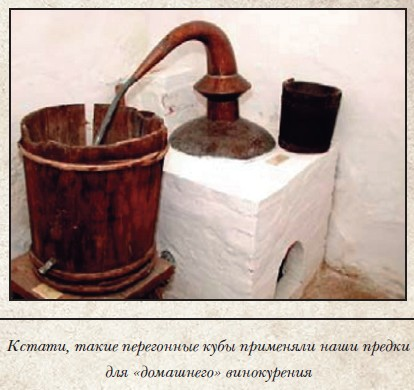
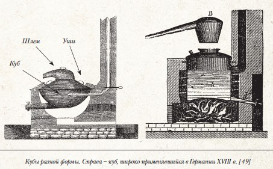
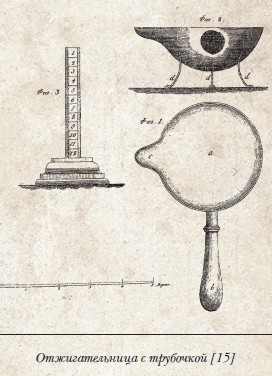

Русский национальный напиток — хлебное вино

Кое-что о возникновении дистилляции на Руси. Классическое русское винокурение конца XVII — середины XIX в.
Алкоголь, или пищевой этиловый спирт, — это результат жизнедеятельности растительных микроорганизмов — дрожжей. Схема получения алкоголя выглядит примерно так: попадая в богатую сахаром среду, дрожжи начинают бурно размножаться, питаясь сахаром и перерабатывая его в два основных продукта: спирт и углекислый газ. Этот процесс называется брожением . Разумеется, это предельно упрощенная схема, так как брожение — сложнейший биохимический процесс, впервые полно и корректно описанный знаменитым Луи Пастером. Брожение легко происходит в средах, от природы насыщенных сахаром. Самый яркий пример подобной среды — виноградный сок. Именно поэтому вино известно человечеству с незапамятных времен.
Несколько сложнее обстоит дело со злаковыми культурами. Чтобы вызвать брожение, сначала надо обратить в сахар крахмал, содержащийся в злаках. Осахаривание крахмала происходит под воздействием особых белковых молекул — ферментов (энзимов). На практике чаще всего используется осахаривание с помощью солода. Солод — то же самое зерно, только пророщенное. Пророщенное зерно содержит большое количество фермента диастазы, так что, добавляя солод в крахмалосодержащую среду, фактически добавляют диастазу, которая и производит осахаривание. А далее внесением дрожжей вызывают брожение.
Однако для того, чтобы из полученной в результате брожения спиртосодержащей смеси выделить более-менее чистый спирт, необходимо произвести фракционную перегонку. То есть перевести все жидкости, входящие в смесь, в парообразное состояние и, основываясь на разности температур кипения, произвести разделение этих жидкостей. Этот процесс называется дистилляцией . Дистилляция, в отличие от брожения, которое легко может происходить в естественных условиях, является процессом, так сказать, рукотворным и требует высоких температур и некоторого аппаратного обеспечения — от примитивного в древности до весьма сложного в настоящее время. В литературе первое описание аппарата для дистилляции дано в трактате знаменитого средневекового врача и алхимика Арнольда де Вилленова (Arnold de Villeneuv) в конце XIII в.

Когда именно дистилляция, т. е. процесс получения крепких спиртосодержащих жидкостей способом перегонки пищевого сырья, появилась на Руси, доподлинно не известно. Так же как не известно и то, была ли эта технология заимствованной или же возникла совершенно независимо, и когда на ее основе образовалась целая, как сейчас выразились бы, отрасль — винокурение.
Сами по себе эти вопросы представляли интерес исключительно академический до тех пор, пока во второй половине ХХ в. в них не появился ярко выраженный коммерческий оттенок. Дело в том, что напиток «vodka», дотоле воспринимавшийся в мире скорее как русско-советская экзотика, постепенно стал приобретать все большую популярность, превратившись со временем в весьма привлекательный бренд. Естественно, разгорелись дискуссии о том, каково же строгое определение понятия «водка», когда и где этот напиток возник и кто же, в конечном итоге, является правообладателем товарного знака. На этой волне стали возникать многочисленные исследования и псевдоисследования, касающиеся в том числе и истории русского винокурения.
Впрочем, сейчас речь идет не о водке в ее современном понимании, а о традиционной русской дистилляции, ее возникновении и развитии. Причем опираться мы постараемся только на факты, по возможности исключив из рассмотрения различного рода домыслы и предположения. Фактов — в данном случае достоверных источников — по крайней мере, до начала XVIII в. не очень много. Все они подразделяются на две группы: те, что дают основание предполагать, и те, которые доказывают. Например, приведенный В. В. Похлебкиным термин «твореное вино» дает основание предположить, что речь идет о продукте примитивной перегонки, но совершенно этого не доказывает. Также весьма спорными являются попытки ряда исследователей использовать Новгородскую берестяную грамоту[59] для доказательства древности русского винокурения. Гипотезы, построенные на них, будут подробно рассмотрены в главе VIII.
Текст же, скажем, из знаменитого «Домостроя»:
«…А вино курити, самому ж неотступно бытии, или кто верен — и прям тому приказати, а у перепуска потому ж, и крепчяя беречи, да смечать по колку ис котла араки перво, и другой последу уточнять, а у перепуска потому ж смечать, колке ис котла укурит первого, и среднего, и последнего…» [60]
вполне доказывает, что технология перегонки в XVI в. на Руси была вполне отлажена и применялась в быту.
Что же касается конкретных дат, то к настоящему времени известно только два источника, и оба они принадлежат иностранным авторам.
Самое первое упоминание о том, что на Руси применялся процесс перегонки спиртосодержащих жидкостей, содержится в труде польского историка и географа Матвея Меховского «О двух Сарматиях», опубликованном в 1517 году. Описывая жителей Московии, он пишет:
«Они часто употребляют горячительные пряности или перегоняют их в спирт, например, мед и другое. Так, из овса они делают жгучую жидкость или спирт и пьют, чтобы спастись от озноба и холода: иначе от холода они замерзли бы» [61]
Правда, Матвей Меховский сам никогда не был в Московии и в других русских княжествах, все свои описания он делал с чужих слов, и к его свидетельству следовало бы отнестись с известной долей осторожности. Но именно в 1517 году Московское княжество посетил с посольской миссией Сигизмунд Герберштейн, который подробно описал свое путешествие в книге «Записки о Московии»[62] Вот что он пишет:
«В рыбные дни мне привозили забитую рыбу и много больших копченных на воздухе без соли осетров; еще графинчик с водкой (в оригинале — pranndt Wein), которую они всегда пьют за столом перед обедом».
И еще:
«Наконец стольники вышли за кушаньем [снова не оказав никакой чести государю] и принесли водку (в оригинале — aqua vitae), которую они всегда пьют в начале обеда…»
Немецкий термин «pranndt Wein» и латинский — «aqua vitae» (оставим на совести переводчика употребление слова «водка») совершенно однозначно указывают на то, что во время путешествия автора в 1517 году продукты перегонки спиртосодержащего сырья в Московии уже были в повседневном обиходе.
Здесь же констатируем следующее: все доступные на сегодняшний день материалы свидетельствуют о том, что технология дистилляции могла появиться на Руси начиная с XII в. (хотя и с небольшой долей вероятности), доподлинно была известна с XVI века, тогда же вошла в повседневный обиход, в XVII в. стала основой, на которой складывалось винокурение как самостоятельное и весьма прибыльное производство, и наконец, к началу XVIII в. этот процесс был в общих чертах завершен.
Для того чтобы получить полное и достоверное представление о том, что такое классическое русское винокурение, лучше всего обратиться к периоду между шестидесятыми-семидесятыми годами XVIII в. и двадцатыми-тридцатыми XIX в. Причин тому несколько. Во-первых, к этому времени винокурение превратилось во вполне устоявшуюся как технически, так и технологически отрасль сельского хозяйства. Во-вторых, это был период относительной стабильности: технические усовершенствования не носили революционного характера, практически не менялась и сырьевая база. И наконец, в это время появляется специальная литература, как отечественная, так и переводная, полностью посвященная практическим и отчасти даже теоретическим вопросам винокурения, дающая вполне объективную информацию о состоянии отрасли.
Нам предстоит как минимум ответить на следующие вопросы:
1. Что же за продукцию производили на винокурнях?
2. Из какого сырья?
3. По какой технологии?
4. На каком оборудовании?
Для того чтобы рассмотреть эти вопросы подробно, ответим на них сначала односложно, дабы была база, от которой можно отталкиваться. Итак, по порядку.
В наиболее общем виде продукцией винокурен было «горячее вино». По чеканной формулировке автора начала XIX в.:[63]
«Горячее вино есть жидкое пиемное тело, происходящее чрез спиртоватое брожение соков из снедных веществ, состоящее в спирте, смешанном с некоторою частию воды и передваиванием от прочих соков отделяемое»
Говоря современным языком, винокурни производили питьевую спиртосодержащую жидкость методом дистилляции продуктов брожения пищевого сырья. Называли эту жидкость «горячим вином», или просто «вином».
Здесь следует сделать некоторое замечание относительно терминологии. Русская дореволюционная бытовая терминология, относящаяся к производству и продаже крепких спиртных напитков, чрезвычайно многообразна, порой даже излишне.[64] Почему так произошло — разбираться языковедам. Вместе с тем в специальной литературе, посвященной винокурению, а также в различного рода нормативных актах все термины строго определены, что вполне естественно, так как они носили «рабочий» характер, не допускающий никакой двусмысленности. К сожалению, в ряде современных публикаций присутствует серьезная терминологическая путаница. Начало этой неразберихе (да и не только этой) положил автор популярной «Истории водки» В. В. Похлебкин, смешавший производственные и бытовые термины, да еще и относящиеся к разным временным отрезкам, и «расшифровавший» эти термины, порой подгоняя определения под собственную тенденциозную концепцию, а порой просто не удосужившись разобраться что к чему. Так, в частности, рассуждая о «горячем вине», В. В. Похлебкин пишет:
«Несмотря на широту распространения, длительность употребления, термин самый неустойчивый и самый искажаемый. Правильнее всего „горящее вино“, то есть то, которое обладает способностью гореть, выгорать, а не „горячее“, то есть обладающее высокой температурой, и тем более не „горелое“»
На самом же деле термин этот — абсолютно строгий. Он фигурирует во всех руководствах по винокурению и означает спиртосодержащую жидкость, полученную методом перегонки, то есть горячим способом, точно так же, как и немецкий термин «branntwein». А «горящее» и «горелое» — варианты исключительно бытовые.
Но вернемся к производству вина. Горячее вино, полученное из злаковых культур, то есть из «хлеба», именовалось «хлебным вином».
Основным сырьем служила рожь с добавлением, как правило, других злаков. Солод использовался ячменный или ржаной, реже — пшеничный. Впрочем, по утверждению известного русского специалиста XIX в. по винокурению Ф. Илиша,
«большая часть ржи затирается в России без солода» [65]
Многочисленные руководства того времени дают подробные наставления по технологии получения бражки, отличающиеся лишь деталями.
Бражка перегонялась в простых перегонных кубах, к тому времени в основном медных. Перегонка производилась минимум дважды: вначале без отделения головной и хвостовой частей, то есть без разделения на фракции. Основная задача первой перегонки — выделить из бражки весь содержащийся в ней спирт. Вместе со спиртом выделялось также большое количество воды (флегмы) и побочных продуктов, о которых мы поговорим позже. В результате этой операции получалась так называемая рака. При следующей перегонке (двоении раки) производилось тщательное отделение «голов» (по тогдашней русской терминологии «скачок» или «отскок») и «хвостов» («отгон»). Итог — собственно хлебное вино, именуемое «простым». Простое вино было одновременно и продуктом, готовым к употреблению (после нормализации его по «доброте», то есть по крепости), и сырьем для выработки спирта, а также «тонких» напитков. Спирт, под которым подразумевался дистиллят с содержанием алкоголя свыше 50 %, вырабатывался последующей перегонкой вина в тех же перегонных кубах. А вот изготовление «тонких» напитков на основе хлебного вина, по большей части ароматизированных, уже не являлось предметом винокурения и производилось на другом оборудовании — в малых «водочных» перегонных кубиках, чаще всего даже за пределами винокурни. К этому весьма важному обстоятельству мы вернемся позже.
Так выглядит в самых общих чертах своего рода схема классического русского винокурения. Но, как известно, «и бог, и дьявол — в деталях». В рамках этой схемы существовало великое множество нюансов, по поводу которых мнения винокуров расходились, зачастую очень серьезно.
Самый лучший способ разобраться во всех тонкостях русского винокурения — перенестись мысленно, ну допустим, в 1800 год, построить себе небольшую виртуальную винокурню и собственноручно изготовить партию хлебного вина — частично для поставки в царскую казну, частично для собственного употребления, как, по сути, и поступало большинство помещиков-винокуров. А в наставники и советчики мы призовем лучших специалистов своего времени.
Итак, вы — помещик, ибо в то время действовал «Устав о винокурении» Екатерины II, в котором недвусмысленно было сказано:
«Вино курить дозволяется всем дворянам и их фамилиям, а прочим никому» [66]
В зависимости от величины поместья и состояния выбираете, какого размера будет ваша винокурня. Допустим, небольшая. Так легче разбираться, тем более что большая и маленькая в те времена качественно не различались: в большой лишь площадей да перегонных кубов поболе. Главный консультант по строительству — Иван Семенович Захаров, автор книги «Хозяин-винокур» (это ничего, что книга вышла в 1807 г. — суть от этого не меняется). Его коллеги также получат слово.
И вот как будет приблизительно выглядеть ваша винокурня:[67]

Со строительной частью все ясно из рисунков, тем более что она нас не очень-то и интересует. Остановимся на основном оборудовании — перегонных кубах. Здесь их предусмотрено четыре. Бражный, заворотный и винный будут вмурованы в печь, спиртовой — расположен в отдельной комнате.
Наличие заворотного куба совершенно не обязательно, хотя и помогает оптимизировать процесс. Бражный куб предназначен для перегонки бражки в раку. Винный — для перегонки раки в вино. Спиртовой (водочный) — для «тонкой» выделки. В принципе использовались различные формы кубов, но в русском винокурении предпочитали широкие в основании, «приплюснутые», с такими же «приплюснутой» формы шлемами, хотя никакого канона, вроде применяемого во Франции для выделки коньяка шарантского аламбика, не было.
Словом, с формой куба размышлять долго не будем — делаем широкий и «приплюснутый».

Некоторые проблемы возникнут с материалом для его изготовления. Если, допустим, французы или шотландцы испокон века использовали медь и только медь, то у нас было все не так просто. До середины XVIII в. русские помещики явно не хотели раскошеливаться на дорогой материал, предпочитая использовать дешевый чугун.
Екатерине II пришлось в упомянутом «Уставе о винокурении» отдельным пунктом фактически запретить эту практику. Более того, те,
«кто выпишет, или по выписанным уже себе сделает такие кубы, какими курится в Англии», признавались «о пользе Государства ревнительными сынами Отечества» [68]
Словом, как всегда: пока какая-нибудь царица-матушка кулаком по столу не стукнет… Ну понятно. Мы же с вами, естественно, являемся самыми что ни на есть ревнительными сынами Отечества, и кубы по сему закажем меднику. (Не из Англии же их выписывать, в самом деле!) Но и это еще не все. Хотя медь
«гигиеничный материал… и… в процессе дистилляции… отдает свои ионы, связывая нежелательные химические элементы, в основном и отвечающие за неприятный запах, который может появиться в дистилляте», [69]
русские винокуры относились к ней с большой настороженностью. Считалось, что в процессе перегонки образуется окись меди («ярь-медянка»)
«с которой сивушное масло соединяется и тут-то издает особенно противный запах» [70]
Правда, вредные иностранцы утверждали, что если строго соблюдать технологию, то никакой медной окиси не будет[71] Тем не менее в России кубы все-таки предпочитали на всякий случай изготавливать из луженой меди. При этом — увы! — существовал риск, что медник лудить будет не «чистым английским оловом», а свинцово-оловянной смесью. Тогда-то уж точно мало не покажется…[72] Остается добавить, что в некотором смысле вопрос о влиянии меди остается открытым для некоторых специалистов и сегодня.

В современной книге, посвященной винокурению, читаем:
«…медь… является катализатором, способствующим образованию новых летучих веществ, которые во многих случаях, улучшая органолептические показатели, одновременно являются для организма ядами» [73]
Впрочем, к проблеме «либо яд — либо вкус» мы еще вернемся, когда будем говорить о сивушном масле и прочих естественных примесях.
Так или иначе, справившись с дилеммой «лудить — не лудить», мы с вами обзавелись основными винокуренными снарядами. Есть еще, конечно, «трубницы с прохладителем», то есть змеевики с охладителем, но это уже мелочи, несмотря на кое-какие нюансы. Все остальное оборудование подробнейшим образом перечисляется в различных «руководствах» того времени[8,15,25]
Ну вот, наша с вами винокурня готова. Вполне себе среднеевропейская винокурня, если не считать «лудежа», конечно.
Настала пора разбираться с сырьем. Здесь, казалось бы, полная свобода. Горячее вино могло производиться чуть ли не из любого растительного сырья. В ход шли рожь, пшеница, ячмень, овес, кукуруза (маис), просо, гречиха, картофель, свекла и свекловица, морковь, пастернак, цикорий, всевозможные фрукты и ягоды — всего и не перечесть — вплоть до клубней георгинов. Однако в реальности выбора-то и не было (ну, может быть, за исключением юга России). В те времена в больших количествах выращивались лишь рожь и овес.
Овес из-за специфического строения зерен — большое количество скорлупы — использовался только в качестве добавки, несмотря на то что
«вино, приготовленное из овса, имеет очень чистый, безсивушный вкус» [75]
Пшеница была дорогой, так что оставалась рожь. Надо заметить, что у русских винокуров не было единства мнений в отношении того, какое сырье дает объективно лучшее вино. Приведем лишь два противоположных мнения. С одной стороны:
«Вино, получаемое из ржи… не имеет того приятного вкуса, как пшеничное вино» [54, цит. по 53]
С другой:
«рожь, в смысле материала для винокурения, не только не уступает пшенице, но стоит ее даже выше» [77]
Кстати сказать, в одной из самых старых русских книг, где даются рекомендации по винокурению, под длинным названием «Экономическое наставление дворянам, крестьянам, поварам и поварихам» [78] вообще не рекомендуется использовать рожь в виноделии.
«Когда желаешь иметь хлебную водку хорошую, то надобно употребить на то яровой хлеб, например: ячмень, овес, гречу, горох, пшеницу, просу, кроме ржи и хмелю, которое никогда на вино употребляемо быть недолжно»
Так или иначе, выбора, повторим, практически не было. Правда, чаще всего рожь использовалась с различными добавками, так как опытным путем было установлено, что
«разные роды мучнистых зерен вместе взятые, для винокурения гораздо выгоднее» [79]
Затем солод. Солод, как известно, представляет собой проросшие хлебные зерна. С помощью ферментов солода происходит превращение крахмала в сахаристые вещества, которые, в свою очередь, сбраживаются дрожжами. И хотя, по утверждению Илиша,[80] русская рожь содержит так много клейковины, что может использоваться без солода, делалось это все-таки в крайних случаях. При выборе солода для нашей с вами винокурни вариантов тоже немного.
«У нас солод растят только ржаной и ячной, — замечает Иван Семенович Захаров и добавляет: — „Но в землях иностранных, где винокурение производится из одного смолотого солода, проращают оный как из вышеописанных хлебов, так из пшеницы и овса. — Почему такая в производствах винокурения разность, и которое из них лучше? оставляю и себе и прочим рачительным хозяевам на опыт…“ » [81]
Приведенный пассаж замечателен не только тем, что решает нашу проблему с выбором солода, он вдобавок показывает, что русские винокуры вполне были осведомлены о том, что происходит «в землях иностранных», то есть находились, как ныне говорят, «в мейнстриме», а не варились в собственном соку. Кстати, позднее в России начали использовать и пшеничный солод тоже.
Далее — вода. Наиболее подходящей для винокурения считалась мягкая проточная вода без посторонних привкусов.
«Лучше всего чистая, мягкая речная вода, которая почти не мутится от спирта и мыльного раствора» [82]
Для определения пригодности воды к винокурению предлагались разнообразные тесты. В большинстве случаев в России на рубеже XVIII–XIX вв. такая вода без труда находилась почти в любом месте. Если же ваша винокурня все-таки оказывалась вдали от источников мягкой воды, то для подобных случаев существовали методы «исправления» имеющейся. Например, раз в полгода насыпать в колодец соль. Считалось, что после этого вода вполне подходит для винокурения.[83] Да, если уж мы заговорили о воде, то надо заметить, что люди, утверждающие, что, мол, настоящая русская водка никогда не делалась с использованием дистиллированной воды, либо ошибаются, либо идут на сознательный обман. Дистиллированная вода использовалась многими русскими водочными мастерами начиная с конца XVIII в., причем подобная практика позднее получила полное одобрение ученых.[5,56]
И наконец, дрожжи. Ну, с этим делом — никаких проблем. Используем либо пивные дрожжи (особенно если поблизости расположена пивоварня), либо винные, либо искусственно выращенные. Рецепты по выделке искусственных дрожжей в огромном количестве присутствуют в любом руководстве по винокурению того времени.
Теперь у нас есть все необходимое для изготовления хлебного вина. Помолясь, начнем.
В теории процесс выработки хлебного вина не очень сложен: мука с добавлением солода перемешивается с горячей водой, выдерживается в течение времени, необходимого для перехода крахмала в сахар, — получается сусло. В него закладываются дрожжи, и после сбраживания полученная алкоголесодержащая масса (бражка) перегоняется в кубе. В процессе перегонки алкоголь, имеющий более низкую температуру кипения, чем вода, испаряется. Частично испаряется и вода. Эти пары конденсируются и все — получается более-менее чистая смесь алкоголя с водой. Увы, это просто лишь в виде схемы. В этом мы с вами сейчас убедимся в процессе приготовления «виртуального вина».
Итак, готовим сусло. Проблемы начинаются сразу же: как молоть зерно? Современный автор, говоря о старых технологиях, утверждает:
«Используется мука… максимально мелкого помола» [85]
Ему оппонирует «Русский опытный винокур»:
«Как соложеный, так и не соложеный хлеб, назначаемый для винокурения, мелится хруско, то есть в крупную, а не мелкую муку» [86]
Вместе с тем его современник и соотечественник настоятельно предлагает следить за тем,
«чтоб смолота была не крупно, однакож и не слишком мелко» [87]
Во как! Впрочем, винокурня ваша, вам и решать, как же все-таки молоть зерно. Стойте себе на здоровье в ступоре, а мы тем временем приступим к так называемому затиранию, сиречь смешиванию муки с водой. Казалось бы, чего проще — приготовить тесто. На самом деле процедура эта требовала недюжинного мастерства, особенно в те времена, когда затирали вручную, специальными веслами.
Надо было как минимум строжайшим образом следить за температурным режимом, несколько раз меняющимся от начала затирания до распаривания и последующего охлаждения затора, и, кроме того, добиться, чтобы масса не содержала даже малейших комочков. При этом в процессе затирания недопустимы были никакие паузы, иначе все насмарку. Далее очень важно было определить, когда наступила готовность сусла: ни в коем случае нельзя было как недодержать, так и передержать:
«…более продолжительный период сахарообразования содействует слишком сильному растворению клейковины, а последнее обстоятельство… причиняет вредное образование кислоты» [88]
От себя добавим, что речь идет о кислоте, благодаря которой при перегонке в медных кубах образуется окись, та самая, что так пугала тогдашних винокуров. При всем том надо заметить, что разногласий хватало и здесь, особенно по части температурных режимов. Для особенно любознательных приведем «инструкцию» от 1773 г.:
Пред самым затором должно в чан влить горячей воды, и покрыть, дабы он не был студен; а в противном тому случае разтвор с самого начала охолодеет. В нагретой чан всыпать бочку крупной ржаной муки, и полчетверика молотаго солоду; потом влить туда четверть бочки кипятку, и вполы против того студеной воды; после того мешать двумя веслами до тех пор, пока не будет в тесте комков. А как оных уже нет, то влить еще полбочки теплой воды, хорошенько размешать, и дать полчаса буровить; потом влить еще горячей воды столько, чтобы разтвор был так жидок, как брага, и во время беспрерывнаго мешания веслами в чану должно смотреть, хорошо ли буровит, и довольно ли солодеет. Ежели хлеб хорош, и вода была достаточно горяча; то разтвор по прошествии двух часов будет солодковат, и поверхность сделается гладкою, как будто бы покрыта маслом. Тогда влить еще горячей воды, и мешать с час времени, чтобы большой жар вышел, и брага сделалась бы еще жиже. Напоследок мешать только по времени; дабы отсевшая на дно густота не безпрестанно лежала, но мешалась бы с жидкостию.
Некотрые думают, что разтвор чем больше и сильнее мешают, тем он бывает слаще, но их мнение несправедливо. Сладость происходит от доброты и силы хлеба, которая отчасу больше умножается от частого наливания горячей воды, потому гораздо лучше по малу и чаще, а именно: чрез каждые полчаса подливаеш по полуушату горячей воды, и мешать безпрерывно; ибо разтвор тогда скорее солодеет. Однако сперва не должно наливать кипятком, или чрезмерно горячею, но разведено с холодною водою, чтобы разтвор не заварился.
Разтвор буровит и солодеет почти целые два часа; а между тем подливают теплую воду в чан, и мешают веслами. Спустя два часа после того он засолодеет, покроется белою пеною наподобие молока, и под оною отстоясь, сделается светлым; то должно его прохолодить студеною водою, и сделать жиже по сему содержанию, что на одну бочку хорошей ржи берется целые пять бочек воды. Но для такой ржи, которая хуже и следовательно не столь много буровит, требуется воды меньше упомянутого количества. Для разведения разтвора должно всегда иметь довольно горячей воды в запас; дабы онаго вдруг не остудить, но беспрестанно содержать тепловато. Естьли разтвор сделается так тепл, как морская вода летом, то и начнется закисание. [89]
Но вот наконец все сложности преодолены, сусло готово. Приступаем к добавлению дрожжей. Количество, которое надлежит «запущать», зависит исключительно от их вида и качества, так что опираться можно только на опыт. После добавления дрожжей начинается сбраживание.
«Хорошее переброжение затора достигается только спокойным, медленным, но в то же время сильным брожением» [90]
Бражку можно считать готовой, ежели
«раскрыв крышку заторного чана, услышишь или почувствуешь… приятный виннокисловатый запах» [91]
Уф-ф! Кажется, справились. Остается надеяться, что у нас с вами получилось все как надо, иначе впоследствии не миновать больших проблем… Но — вперед, пока бражка не перестояла.
Нас ждет перегонка, или «производство самого винокурения»[92] В русском языке этот процесс назывался еще «курение вина» и «сидение вина», откуда термины «куреное вино»[93] и «сиженое вино»[94] Слово «курение» дает представление о, так сказать, физико-химической стороне дела: этим термином обозначалось все, что связано с образованием летучих веществ — дыма, пара и пр. «Сидение» же намекает на технологическую сторону — необходимость неотлучного присутствия на протяжении всего процесса. По-видимому, эти термины предшествовали наименованию «горячее вино», которое, вероятно, представляло собой перевод немецкого «Branntwein». Впрочем, это всего лишь предположение. Решающее слово — за лингвистами. А нам с вами пора приступать к увлекательнейшему занятию — виртуальному «сидению» хлебного вина.
Для начала необходимо позаботиться, чтобы бражка в процессе перегонки не пригорала, ибо эта самая «пригарь» была просто-таки бичом огневого винокурения. Технологических приемов для предотвращения пригорания было множество: стелить на дно бражного куба солому, укладывать туда же мелкоячеистую медную решетку на треноге, использовать металлические шарики, которые перекатывались бы от кипения браги и не давали ей пригорать и т. д. и т. п., вплоть до смазывания днища куба «ветчинным салом»[95]
Тем не менее главными для русских винокуров оставались тщательное перемешивание браги при нагреве или солома, уложенная на дно.[8,15] Остановимся, допустим, на втором варианте, то есть кладем на дно бражного куба (у которого снят шлем, разумеется) солому, а затем наливаем бражку. Поскольку у нас винокурня устроена по последнему слову научной мысли начала XIX в. (спасибо милейшему Ивану Семеновичу Захарову), брагу нам не придется наливать ведрами — пойдет самотеком (см. рисунки винокурни). Наливаем ее «по самые уши» («уши» — это такие ручки, что ли, на внешней поверхности куба, см. рисунок) и разжигаем печку. Огонь должен быть сильным, чтобы брага нагревалась быстрее. Как только она закипит, накладываем шлем, обмазываем стык глиной или ржаным тестом и с помощью заслонок уменьшаем огонь в печи, так как вытекать рака должна равномерно, а трубы должны оставаться холодными. Перегонка продолжается до тех пор, пока в отгоне полностью перестанет ощущаться присутствие спирта. Перестало — процесс прекращается.
Все. Первая перегонка закончена. Далее полученная рака выливается в другой куб — винный. Оставшаяся в бражном кубе после перегонки масса — так называемая барда — сливается в специальную емкость и впоследствии используется как корм для скота. Приведенная метода была самой употребимой,[97] но существовали и варианты, призванные, так сказать, оптимизировать процесс. Скажем, тот же Захаров предлагал делить раку «на две доброты», то есть первую, более крепкую половину вытекающей раки собирать отдельно и заливать в винный куб, а вторую, послабее, отправлять в специальный заворотный куб (вот зачем он нужен, оказывается!) и перегонять снова в раку, тем самым повышая ее крепость. И таких технологических вариантов было довольно много, здесь не имеет смысла их все перечислять. Лучше приступим к перегонке раки в собственно вино.
Делаем все почти так же, как при перегонке бражки, с тем лишь отличием, что в начале процесса необходимо отделить самую первую часть погона, именуемую в разное время и в разных языках по-разному: «скачок», «отскок», «головная фракция», «голова», «первач». В старых руководствах ничего не говорится о том, какая же, собственно, часть погона является первачом — все оставляется на усмотрение винокура. По современным данным, это приблизительно 4–5 % от содержащегося в раке абсолютного спирта.[98] Первач крайне не рекомендуется «употреблять внутрь», хотя у нас часто все-таки «употребляют». Эта едко-пахучая жидкость, мутнеющая при добавлении воды, содержит большое количество ядовитых высших спиртов. Так что последуем совету старого винокура и используем первач «для домашних лекарств»[99] Помимо отделения «скачка», иногда отбирали несколько штофов приблизительно из середины погона — такое вино называли «отъемным», и ценилось оно высоко. Ну а общие правила для винокура формулировались так:
«При сидке вина винокур непременно должен быть сам, и наблюдать, чтобы отскок был особо отнят, чтоб погон был равен и всегда холоден, и никогда бы горячая рака и вино не выходили; ибо от того происходит в вине отвратительный дух, состоящий в пригорелом масляном веществе…» [100]
Итак, мы с вами «сидели»-«сидели» и, наконец, «высидели». То, что мы «высидели», именуется «простым хлебным вином». И что же теперь? А теперь, естественно, надо понять, хороший ли продукт мы изготовили или же так себе (откровенной дряни получиться не могло никак, ибо, несмотря на неопытность, технологию мы соблюдали). В общем, как говаривали раньше, проверить вино «на доброту».
Здесь снова придется отвлечься на терминологию. Почему-то у некоторых современных авторов с этой самой «добротой» — просто беда. Например, в[101] читаем:
«В России в старину водка… называлась вином. В те времена (какие? — Прим. авт. ) она разделялась на сорта: простое вино, вино доброе, вино боярское и наконец „высший“ сорт — вино двойное, очень крепкое»
Простите, но здесь явная путаница. Простое вино — производственный термин, обозначающий продукт перегонки раки, а никак не «сорт» вина; вино боярское — термин XVI в., в настоящее время не определен; доброе вино — просто «хорошее, качественное, крепкое»; вино двойное — также производственный термин, означающий продукт перегонки простого вина с целью повышения его крепости. То есть в одном ряду «и хомуты, и пряники». Ну да ладно.
Так по каким же параметрам мы будем определять степень «доброты»? А фактически по тем же, что и обычно: по органолептике (вкус-запах-цвет) и по процентному содержанию этилового спирта (крепость). Начнем с органолептики. Сначала проверяем визуально, затем пробуем. Если вино мутное, имеет какую-либо постороннюю окраску либо ощущается «пригарь и противный запах» — дело плохо, вино придется улучшать, ибо в таком виде его в казну не примут. Отсутствие «пригари и противного запаха» — единственные органолептические критерии при сдаче вина по подряду. («Сдать в казну по подряду» — означает продать государству по фиксированной цене в соответствии с предварительно заключенным договором.) Ну и, естественно, попробовав, мы можем предварительно оценить крепость полученного продукта. Далее нужно определить крепость, ну скажем так, несколько точнее.
Спиртометры в России появились в двадцатых-тридцатых годах XIX в., а мы с вами, напомню, в 1800 году. Следовательно, будем «чинить опыты». Хитроумное человечество в доинструментальный период придумало множество способов определять крепость алкогольных дистиллятов.[19,28,62] Мы же будем использовать те, которые по преимуществу применялись в России. Начнем с так называемой «голландской пробы», или проверки «на пену». Производилась она следующим образом: некоторое количество вина выливалось в рюмку с высоты приблизительно сантиметров двадцать «водопадиком». Если при этом образовывалась устойчивая пена толщиной в мизинец — вино считалось «пенным», «пенником»[25,26,45] Впоследствии было установлено, что подобным свойством обладают водно-спиртовые растворы, содержащие свыше ~47–50 % спирта.[19,62] Однако этот метод имел и свои недостатки:
«Ктож принимает вино на пену, тот должен остерегаться обмана: ибо подкладывают в него негашеную известь, которая оную производит» [105]
Кроме того, вино, выкуренное с добавлением овса, отличалось повышенным пенообразованием.[106] Наиболее же распространенным в России способом определения содержания спирта в вине был «отжиг». В общем виде суть его сводится к тому, что вино, предварительно нагрев до кипения, поджигают, ждут, когда выгорит, и по остатку определяют количество выгоревшего спирта. С 1698 г. Указом Петра I[107] отжиг был введен в качестве официального метода определения крепости вина и оставался таковым до 1843 г., когда в России был введен в употребление спиртометр Гесса.[108] Наиболее точно понятие «полугар» формулируется в указе Николая I от 1842 года «О доброте питий»:
«Вино полугарное должно быть узаконенной доброты, которая определяется таким образом, чтобы влитая в казенную заклейменную отжигательницу проба онаго, при отжиге выгорела в половину» [109]
Мы приведем здесь технологию отжига в ее самой, так сказать, «изощренной» форме:
«1. Взять вина из середины бочки.
2. Отжигательницу иметь не медную, но из чистого серебра сделанную, на подобие пустого полушара, на ножках с ручкою и с рыльцом.
3. Заказать сделать стеклянную трубочку, на которой размечено б было 12 градусов, колико можно верно.
4. Отжигательницу снаружи всегда должно очистить, внутри вымыть тем же вином, и обтереть платком сухим и чистым.
5. Наливать три или две трубочки осторожно: дабы ни мимо капли, ни менже (так в оригинале. — Прим. авт. ) не пропало.
6. Подогревать отжигательницу только до той степени, как начинает вино на дне кипеть. В ту ж секунду надлежит поджечь; а дольше кипеть не давать, дабы не усыхало.
7. Поставить гореть спокойно; но коль скоро пламень начнет ослабевать, то взяв в руки отжигательницу можно тихонько оную покачивать; дабы разрушить то масленое вещество, которое под отонкою своею содержит спирт подавленным.
8. После, когда и за тем потухнет, можно поджечь еще один раз — но не больше, и погасшую флегму простудить.
9. Вливать флегму обратно в трубочку чрез маленькую воронку осторожно; чтоб ни капли мимо не вылилось» [110]

Особенно важен для нас пункт 5 — «наливать три или две трубочки». Если мы налили в отжигательницу две трубочки и, вылив обратно оставшуюся после отжига «флегму», убедились, что она полностью помещается в одной — значит, выгорела как минимум половина, то есть наше вино «полувыгарное», или «полугар». Если не помещается — то «недогар», о нем разговор пойдет далее. «Перегар», т. е. крепость выше полугара, определялась делениями («градусами»), нанесенными на трубочку. Если же наливалось три трубочки, а оставшаяся «флегма» помещалась в одну, то вино наше — «трехпробное». Если бы при отжиге выгорал только спирт, то в полугаре должно было бы содержаться 50 % спирта. Но так как при отжиге испарялась и часть воды, то реально крепость полугара составляла 38–39 % об., крепость трехпробного вина — 54–56 %.[111]
Пункт 2 тоже имеет значение, так как от материала, из которого сделана отжигательница, зависела точность измерения. Считалось, что серебро дает самую маленькую погрешность, так что полугар, «отожженный» в серебряной отжигательнице, имел особое наименование — «серебряный полугар»[19,45] Однако официально утвержденными были отжигательницы медные.[113] На рисунке вы видите отжигательницу, воссозданную по вышеприведенному чертежу.
Дальнейшие наши действия зависят от того, какой «доброты» получилось вино той или иной «сидки». Ведь при тогдашнем оборудовании и технологиях стабильности качества добиться было практически невозможно. С большой долей вероятности можно предположить, что, как правило, при наличии доброкачественного сырья и соблюдении технологии получалась жидкость, по содержанию спирта представлявшая собой нечто между полугаром и трехпробным вином.[8,15] Если не повезло, получили «недогар» — продукт, недотягивающий по крепости до полугара. Если повезло — трехпробное вино или еще более крепкое, то есть, по терминологии тех времен, спирт.
Теперь рассмотрим варианты. У нас с вами получилось:
1. Вино чистое, приятного вкуса и запаха, крепостью не ниже трехпробного — лучший вариант оставить на собственные нужды.
2. Вино без «мути, пригари и противного запаха», крепостью полугара или выше — поставляем его по подряду в казну, при необходимости разбавив водой до полугара.
3. Вино либо «мутное, с пригарью и противным запахом», либо «недогар», либо — ну не повезло! — и то и другое одновременно — это засада. Ибо вино придется «исправлять».
Хорошо еще, если только «недогар»: тогда мы с вами добавим туда спиртику, чтобы вышло «в указанную пробу», — и вся недолга. (Несколько бочек со спиртом на такой случай имелось в любой винокурне.[8,15]) Хуже, когда вино «мутно, с пригарью и дурным запахом». Тогда придется перегонять еще раз. Однако простой перегонкой делу не поможешь, так что перед этим вино придется дополнительно обработать. Рецептов по этому поводу существовало очень много. Вино перед перегонкой обрабатывали поваренной солью, известковой водой, поташем, добавляли в куб винный камень, ржаные корки, лук и даже мясной бульон. Но чаще всего использовалась перегонка с добавлением ароматических приправ, таких как померанцевые корки, можжевеловые ягоды и т. п. Применялась и предварительная обработка древесным углем, а также комбинация этих приемов, что было самым эффективным.[8,24,25,56,63,64,65] Надо сказать, что перегонка с ароматизирующими добавками — метод, уходящий корнями в глубокую древность. Фактически при его использовании никакой очистки не происходит — просто приятный запах маскирует («перешибает») запах противный. Способ этот весьма широко применялся при изготовлении ароматических спиртов, то есть в водочном производстве, о чем мы поговорим чуть ниже. В винокурении же он был во второй половине XIX в. официально запрещен[117], так как считалось, что он способствовал фальсификации вина.
Иное дело — древесный уголь. Его способность поглощать (адсорбировать) вещества из растворов была обнаружена российским академиком Товием Ловицем в 1785 г. и с тех пор очень широко использовалась в разных областях человеческой деятельности, в частности в винокурении.
Ну а в русском винокурении обработка водно-спиртовых растворов углем превратилась со временем просто в неотъемлемую часть технологического процесса. В общем, последуем мы с вами, пожалуй, такой вот рекомендации:
«На десять ведер берется от 10 до 12 фунтов совершенно прогоревших истолченных угольев. Налитое на уголья вино должно в продолжении двух или трех дней прилежно перемешивать, а потом оставить в спокойном состоянии пока уголь весь опустится на дно. После сего сливают жидкость и приступают к перегонке» [118]
К этому надо добавить,
«…что вино, перегоняемое через угольный порошок, должно отнимать тогда, когда выгон лишается уже своего винного достоинства, что познается по тому, ежели возмешь несколько выходящего из трубы вина, и полив его на колпак куба, который в то время бывает горяч, увидишь, что оно и при зажигании счепошкою не загарается» [119]
Что еще? Ах да, вино надо в чем-то хранить… Рекомендации таковы:
«Долговременными опытами дознано, что для хранения вина всего лучше употреблять пивныя, или такия бочки, в которых вино уже было. Бочки сии должны быть из самаго лучшаго дубоваго леса» [120]
Здесь кстати возникает вопрос поистине философский: почему в производстве большинства мировых алкогольных дистиллятов (виски, ром, коньяк) сложилась традиция выдерживать их годами в дубовых бочках, а в производстве русского хлебного вина — нет? А ведь в России прекрасно знали о «заморской» традиции на годы упрятывать свежевыгнанный дистиллят в подвалы и пользовались понятием «старая водка». Так, например, у Е. Молоховец[121] читаем:
«… или как еще в западных губерниях, в некоторых местах находится, под названием „старая“ хорошая водка…»
В трудах Технического комитета за 1891 год описывается исследование старой водки, которую владелец взял в одном из монастырей еще в 1862 году, а
«сколько же лет водка стояла в монастыре — выяснить не представилось возможным» [122]
Кстати сказать, слово «старка» в дореволюционном русском языке практически не использовалось. Говорили именно так: старая водка. Современная же отечественная «старка» — это вовсе не «старая водка», то есть выдержанный в бочках дистиллят, а просто вид настойки. В польском же starka — именно «старая», выдержанная водка.
Так почему же в России не привилась выдержка свежевыгнанного дистиллята в бочках для улучшения вкуса? Четкого ответа на этот вопрос нет.
Попытки объяснения, конечно же, были:
«Хотя вино от сбережения улучшается, при всем том, по следующим важным причинам, сбережение вина редко приводится в исполнение: во-первых, для сего потребен значительный капитал: на покупку материалов для винопроизводства и на другие издержки по сему предмету; во-вторых, для сохранения вина потребуется значительное число бочек и большие пространства для размещения их; в-третьих, если бочки худо сделаны, то от утечки пропадет большое количество вина, наконец, в-четвертых, в течении времени значительное количество вина вбирается в дерево бочек» [123]
Однако все-таки убедительными признать эти рассуждения не получается: а что, например, в Шотландии перечисленные обстоятельства отсутствовали? Или предки наши были такими уж жмотами? Не верится что-то… Словом, загадка.
Ну вот. Будем надеяться, что теперь мы с вами, побыв заправскими винокурами, имеем достаточно ясное представление о том, чем же было классическое русское винокурение, остававшееся неизменным на протяжении как минимум полутора веков — с конца семнадцатого до середины девятнадцатого (некоторые технические усовершенствования начала XIX в. сути дела не меняли). При этом надо понимать, что винокурение ограничивалось именно производством горячего вина, в основном хлебного, которое в виде полугара было фактически единственным массовым крепким алкоголем.
Название «полугар» прочно вошло в русский обиход и означало хлебное вино крепостью ~ 38–39 градусов. Например, у И. А. Крылова в басне «Два мужика», 1825 г., читаем:
«И тоже, чересчур, признаться, я хлебнул с друзьями полугару» [124]
И цитата из В. Г. Белинского («Петербург и Москва», 1844 г.):[125]
«Впрочем, петербургский простой народ несколько разнится от московского: кроме полугара и чая, он любит еще кофе и сигары»
В настоящее время часто можно встретить утверждения, что хлебное вино было напитком очень низкого качества — «отвратительным пойлом»[126] Изучение технологии, по которой оно производилось, не дает никаких оснований для подобных выводов. Да, можно предположить, что по сегодняшним представлениям хлебное вино было несколько грубоватым, но зато имело ярко выраженную вкусовую составляющую. Другой разговор, что этот вкус кому-то может нравиться, а кому-то нет, но это — совсем иное дело…
А теперь — контрольный вопрос: на что могло быть похоже по вкусу хлебное вино? Думаем, думаем… Правильно! На самогон. Только не на сахарный «от тети Мани из Кукуевки», а на высококачественный зерновой, изготовленный двойной перегонкой со строжайшим соблюдением технологии.
Что же касается высших сословий, то они пили другое: напитки, изготовленные из хлебного вина, которым в процессе выделки придавались различные ароматические и вкусовые качества. Это было уже не винокурение, но иное производство, именуемое «дистилляторским». Современные авторы зачастую не делают между ними различия, но русские производители алкоголя прежних времен никогда не путали одно с другим.
«Хотя и самое винокурение, производящееся посредством двоения раки, может называться дистилляторским производством, каковым оно действительно и есть… но в ограниченном смысле, а особливо в домоводствах, под словом дистиллирование разумеют гнание водок, благовонных вод, ликеров, эссенций из разных трав, цветов и прочего сему подобного. Принимая определением нашим последнее значение слова дистиллирование, весьма ясно следует, что дистиллятором можно назвать водочного мастера, ликернаго мастера и делателя различных как благовонных, так и лекарственных вод и спиртов, равно и некоторых других добываемых посредством дистиллирования, в нашем значении принятого, жидких тел. Занимающиеся дистиллированием в большом количестве, строят для того особые лаборатории…» [127]
Впрочем, последнее было отнюдь не обязательным. Дистиллирование, то есть приготовление различных напитков на основе хлебного вина, производилось и на винокурнях, но непременно на другом оборудовании: в переносных перегонных кубах гораздо меньших размеров, нежели стационарные винокуренные, так как «тонких» напитков производилось на порядок, если не на два, меньше, нежели хлебного вина. Много позже это разделение привело к возникновению двух самостоятельных производств — спиртового и ликеро-водочного.
И еще одно важное обстоятельство: в отличие от винокурения, то есть выгонки из зерновых хлебного вина, заниматься дистилляцией — приготовлением из уже произведенного вина различных напитков — разрешалось отнюдь не только дворянам.
«Водки, как из выкуреннаго в клейменые кубы и казаны, так и из покупнаго в питейных домах вина, для своих расходов делать всякого чина людям позволительно» [128]
Ныне некоторыми авторами[1, 2, 3 и др.] активно внедряется представление о том, что в период, который мы с вами сейчас рассматриваем, существовало якобы два вида винокурения. Одно — элитное дворянское — «для себя» и другое — «казенное» — для народа. Дескать, первое достигло невиданных высот качества, а второе гнало массовую незатейливую продукцию. Это неправда. Во-первых, на протяжении большей части XVIII в. казенного винокурения практически не было вообще и все вино было произведено по подряду на дворянских винокурнях (до екатерининского «Указа о винокурении»[130] еще и на купеческих). В этом смысле очень показателен сенатский указ от 11 октября 1760 г. о поставках вина и приготовлении из него водок для Дворцовой Конторы, в котором, в частности, говорится:
«…а водки…имеет приготовлять Главная Дворцовая Канцелярия из того принимаемого вина с отдаточных дворов; ибо… казенной водки ныне не приготовляется и водочных казенных мастеров нет» [131]
Кстати, из него же следует, что даже для дворцовых нужд напитки производились из той самой «массовой» продукции. Во-вторых, хотя помимо дворянских винокурен, изготавливавших вино как для своих нужд, так и для поставок в казну, существовало множество винокурен, работающих только на собственные нужды[132], нет никаких оснований утверждать, что в них использовались какие-то «секретные» технологии. Конечно, энтузиасты винокуренного дела существовали[133] — как же без этого? — но и они производили свои эксперименты исключительно на базе устоявшихся навыков и приемов. Вот как описывает «экспериментальный» процесс известный в свое время энтузиаст-винокур П. Рычков, автор записок с характерным названием «Способ к винному курению на домашние расходы»:
«Взяв сей муки фунта с два, заварили в кадке самым горячим и довольно кипевшим варом, и закрыв холостиною дали преть: потом с час погодя подпустили в нее немного заводских дрожжей, заготовленных к винному курению; а чтобы брага сия была сильнее, лучше упрела и закисла, на верх ея разсыпали сея же травы вышеозначенных корешков. Часа через два стала она киснуть и пускать пузыри с приятным запахом. По прошествии суток, налив ея в кубик, мерою в полтора ведра, взяли из нее раки нарочито крепкой четыре бутылки. Оную раку положа в маленькой кубик, и насыпав поверх ея объявленных сушеных корешков с горсть, держали в теплом месте одни сутки; а потом выгнали из ея чистаго полувыгорнаго вина с полбутылки, не считая белка, который также выгорал, и погону, в котором спирт еще был и на огне загорался. Вкус онаго вина от хлебнаго хотя и особлив; однако казался мне не противен. Выход вина из одних тех семян и корешков оказался не худ; а таже мука, смешанная с хлебным запасом пополам, дала самое чистое и вкусное вино с приятным запахом, да и выход ему был против заводского равномерен» [134]
Как видим, технология вполне классическая. Только «корешки» добавлены…
В общем, не существовало никакого особого «дворянского» винокурения, секрет которого в настоящее время утерян. «Секрет» не утерян, просто этими технологиями никто ныне не пользуется. Почему — об этом речь в следующей главе.
Но, так или иначе, пора переходить к «дистилляции», или приготовлению «тонких» напитков на основе хлебного вина. Сакральный смысл этого производства изначально состоял в следующем: первое — изготовить напиток, который больше всего нравится себе, любимому, а также подобрать что-то для родных и близких. Ну и, естественно, для гостей придумать что-нибудь эдакое, чтоб ахали, охали и причмокивали; второе — создать лекарства на все случаи жизни.
Вспомните добрейшую Пульхерию Ивановну из «Старосветских помещиков»:
«Вот это, — говорила она, снимая пробку с графина, — водка, настоянная на деревий и шалфей. Если у кого болят лопатки или поясница, то очень помогает. Вот это на золототысячник: если в ушах звенит и по лицу лишаи делаются, то очень помогает. А вот эта — перегнанная на персиковые косточки; вот возьмите рюмку, какой прекрасный запах…» [135]
Это «второе» уходит корнями в седую древность, когда первые русские аптекари-дистилляторы склоняся аки ведьмаки над своими ретортами и колбами составляли разные целебные настои. Собственно, от них-то, надо полагать, все и пошло…
Со временем изготовление напитков из хлебного вина превратилось из практически домашнего производства в настоящую ликеро-водочную индустрию.
Рецептов приготовления напитков на основе дистиллятов существует великое множество. Составители современных книжек из серии «приготовление домашних напитков»[61,74 и т. п.] выдергивают их из разных источников, «адаптируют» к современному доступному сырью и, произведя классификацию «по своему разумению», обрушивают на голову доверчивых читателей, запутывая тех окончательно. Наша же задача попытаться понять основные принципы «дистилляторского» производства, разобраться с сырьем и технологическими приемами, которые очень серьезно видоизменялись со временем. А начнем мы, естественно, с терминологии.
Здесь, пожалуй, главное — уяснить для себя вот что: продукцией винокурения было только вино, слово же «водка», по крайней мере, до 40–50-х годов XIX в., относилось исключительно к дистилляторскому и аптекарскому производствам. Доходило, казалось бы, до парадоксов: вино, перегнанное еще раз на винокурне в винном кубе, называлось двойным вином, а то же вино, но перегнанное в маленьком спиртовом (водочном) кубике, — двоенной водкой. Однако никакого парадокса в этом не было, так как по винокуренной технологии перегонка шла до полного исчезновения спирта из отгона, а по дистилляторской происходило именно «двоение», то есть из вина выгонялась половина. У автора — аптекаря конца XVIII в. читаем:
«Двоеная и троеная водка. Сие можно сделать таким образом: надлежит взять простого вина сколько угодно, влить в куб и поставивши колпак, двоить оное до тех пор, пока выдвоится половина оного, которое количество называется двоеною водкою (spiritus rectificatus); а если из сего двоеного вина вновь выдвоить третью часть вина, то оное называется троеною водкою, или самым чистым и крепким вином (spiritus rectifikatissimus)» [137]
Впрочем, в дистилляторском производстве использовалась и «винокуренная» перегонка. В этом случае водка называлась «простой». (В скобках заметим, что у разных авторов в разное время терминология могла расходиться, что тоже необходимо иметь в виду.)
Теперь можно перейти к дистилляторскому оборудованию и сырью для приготовления напитков.
Дистилляторские кубы имели чуть более вытянутую форму, нежели винокуренные, и были оборудованы изнутри крючками для подвешивания мешочков с пряностями. Основным же отличием были размеры: первые делались на порядок меньше, чем вторые (максимум на несколько ведер против нескольких десятков).[15, 63] В целом же дистилляторское оборудование весьма напоминало лабораторное: кроме медных делались стеклянные кубовые шлемы, в качестве приемников служили не бочки, а большие колбы, реторты и т. д. Словом, алхимия, да и только…
Далее — сырье. Основных видов его было четыре: вода, сахар, ароматические вещества, хлебное вино и его производные.
Требования к воде в дистилляторском производстве были в принципе такими же, как в винокурении: вода должна быть мягкой, лучше проточной, и не содержать посторонних примесей. Воду иногда фильтровали через песок и уголь, позднее — к середине девятнадцатого века — зачастую использовали перегнанную, т. е. дистиллированную, воду.[139]
О сахаре можно сказать только то, что его употребляли в дело в виде сиропа, который варился и применялся приблизительно так:
«Три фунта сахара разваривается в штофе воды, снимая до тех пор пену, пока ее не будет более появляться. Потом, простудя и дав недели две постоять, сироп этот приливают в наливку, водку и т. п., полагая около четвертой части против количества водки» [140]
Иногда, в качестве особенного изыска, для приготовления ликеров в сироп при варке добавляли яичный желток.[141]
Ароматические вещества в русском дистилляторском производстве использовались исключительно растительного происхождения. Китайско-корейские фокусы с настаиванием на ящерицах и прочих змеях — ни-ни… За одним, пожалуй, исключением: в деревнях иногда для лечения алкоголиков делали настой на тараканах. Насколько эффективным было средство — неизвестно. Но это, право же, совсем уж деревенская экзотика. Зато в ход шло чуть ли не все, что растет: от неизвестной травки под окном до дорогущих экзотических пряностей. «Водкоделы» XVII–XVIII вв. были чистыми эмпириками и использовали те или иные специи «чисто по понятиям», так что придется привести более позднюю классификацию, датированную 1871 г. Простите за очередную длинную цитату, но она того стоит.
«Число растительных веществ, употребляемых для ароматизирования водок, весьма велико. Травы, семена, коренья и т. п., отличающиеся своим приятным запахом или вкусом, служат для этой цели. Если водка должна иметь горький вкус, то употребляются также и горькия составные части растений… По свойствам, вследствие которых употребляются растительные вещества, и по способу и роду их обработывания они могут быть подразделены на три класса.
Первый класс заключает в себе растительныя вещества, которыя употребляются ради содержания ими эфирных масел, т. е. ради летучих ароматических веществ. Сюда относятся семена тмина, аниса, сельдерея, кардамона, можжевеловыя ягоды, лимонныя корки, мята, цветы апельсинов, роз, горькие миндали и много других веществ.
Второй класс заключает такия растительные вещества, которыя употребляются для приготовления водок кроме как по содержанию в них эфирных масел, еще и вследствие содержания ими вытяжных, именно горьких составных частей. Их можно назвать ароматически-горькими веществами. Сюда относятся померанцовыя корки, померанцовые плоды, ваниль, корица, гвоздика, касатик, галгановый корень, полынь, жареный кофе и много других.
Третий класс растительных веществ, употребляемых для производства сладких водок, заключает в себе свежие плоды. Сюда относятся: малина, вишни, земляника, апельсины, ананасы и т. п.» [142]
И наконец, хлебное вино и его производные — простые водки, спирты и так называемая «французская водка», о которой речь пойдет чуть ниже. То есть для приготовления водочных изделий использовались алкоголесодержащие жидкости, разные как по крепости, так и по степени очистки.
Использование разных по крепости спиртов обусловливалось спецификой того или иного вида ароматического сырья и технологий изготовления конкретных видов напитков. Так, например, для того, чтобы извлечь из растительных веществ второго класса горькие составные части, требовался достаточно крепкий спирт. А вот, скажем, при изготовлении ароматических водок путем перегонки на ароматическом сырье первого класса, напротив, перегоняемая жидкость должна быть невысокой крепости — не более сорока градусов. Ну и так далее.
Очистка же алкоголесодержащего сырья требует подробного разговора. Ох уж эта пресловутая очистка! Сколько вокруг нее создано легенд! До сих пор она не дает покоя маркетологам. То здесь, то там читаешь: Очищено молоком… Очистка выморозкой по старинным русским рецептам… Двойная очистка… Хотя очищать современную водку, изготовленную из ГОСТовских спиртов-ректификатов, и так уже очищенных практически до предела, — занятие абсолютно бессмысленное. Другой разговор, что иногда подобные технологические ухищрения действительно благотворно сказываются на качестве продукта. Однако связано это отнюдь не с дополнительной очисткой, а, наоборот, с тем, что водка, контактируя, например, с молоком, насыщается дополнительными микроэлементами, положительно на нее влияющими.
Да, так вот: специфический вкус хлебного вина обусловливался примесями, содержащимися в водно-спиртовом растворе, — пресловутым сивушным маслом, эфирами, альдегидами и фурфуролом, точно так же, как в коньяке, виски, текиле, роме и т. п. (Напомним, что о сивушном масле и прочих примесях мы будем подробно говорить в главе VI.) Естественно, было замечено, что путем обработки определенным образом хлебного вина можно было существенно повлиять на его вкусовые качества — «приглушить» или видоизменить их, порой значительно, вплоть до полной неузнаваемости. Серьезное теоретическое осмысление этого немаловажного обстоятельства произошло только во второй половине XIX в.,[77,78,79,80] о чем мы тоже поговорим в свое время. Русское же классическое винокурение вполне обходилось эмпирическими навыками, разработав огромное количество разнообразных способов воздействия на вкусовые качества хлебного вина. Можно даже утверждать, что эти приемы служили вполне достойной альтернативой широко применяющейся в мире выдержке алкогольных дистиллятов в дубовых бочках.
Особое значение очистка хлебного вина приобретала тогда, когда дело доходило до изготовления ароматизированных напитков. Понятно, что «природный» вкус вина с одними вкусоароматическими веществами (например, зверобой, анис, тмин) вполне сочетался, с другими — не очень, а с третьими, имеющими ярко выраженный «гастрономический» вкус (шоколад, ваниль), — не сочетался вовсе. Отсюда и разная степень очистки спиртов для изготовления «тонких» напитков.
До введения в обиход спиртометров при выделке ароматизированных напитков использовалось алкоголесодержащее сырье четырех видов по степени очистки и крепости:
— собственно хлебное вино (и простое, и полугарное, и пенное, и трехпробное);
— ректифицированный спирт как продукт перегонки водки;
— «французская водка»[8, 63]
Понятно, что водка была крепче и чище, нежели вино, а ректифицированный спирт — нежели водка. Для водок и спиртов очистка, происходившая в процессе перегонки, считалась вполне достаточной. Иное дело «французская водка». Вообще в русском дистилляторстве это был многозначный термин.
Во-первых, так назывался продукт перегонки винограда: «Французская водка получается из виноградного сока, подвергнутого перегонке»; [145]
Во-вторых — коньяк: «Лучший сорт французской водки называется коньяк…»; [146]
В-третьих — продукт перегонки виноградных дрожжей;
И, наконец, — хлебное вино, обработанное так, что оно практически теряло свой специфический «хлебный» вкус.
В этом последнем смысле термин «французская водка» и использовался чаще всего дистилляторами. Французская водка шла, как правило, на изготовление кремов и ликеров. Существовало довольно много рецептов, позволяющих делать ее из простого вина. Приведем один из них, 1791 г.:
«Взять вина простого шесть ведер, одно ведро молока и передваивать до тех пор, пока чисто выходить будет, а последки отнюдь не гнать, для того что воняют. Проба же делается таким образом: довольно будет когда из всего онаго выдет половина, тогда обмочив в ту же флегму бумагу, зажечь на свече, ежели на бумаге вино сгорит, и бумага суха будет, то еще можно гнать до тех пор когда уже бумага после того окажется мокроватою, то больше и не гнать; потом в другой раз перегонять, прибавя четверть ведра молока, да полгорсти ржаного хлеба…» [147]
Как видим, мы получили ректифицированный спирт (в тогдашней терминологии) с дополнительной коррекцией вкуса. А вот еще один рецепт, почти на столетие «моложе» предыдущего:
«3 ведра простой водки смешиваются с 4–6 фунтами угля, истолченного в порошок, шесть лотов купороснаго масла и 1/4 ведра уксуса. Все это в продолжение двух недель часто мешать и наконец процедить сквозь шерстяную материю, после чего производится перегонка, которая доставляет очень хороший спирт, годный к приготовлению разных ликеров» [148]
Это называется «наука на марше»: вместо молока и ржаного хлеба — серная кислота (купоросное масло)…
Однако пора вернуться непосредственно к напиткам на основе хлебного вина. Как уже отмечалось, было их великое множество, на любой мыслимый и немыслимый вкус. Отличия — в комбинациях исходного сырья и технологиях приготовления. Что касается технологий, то пока водочное производство находилось в стадии полудомашней-полулабораторной, что характерно как раз для рассматриваемого периода, они оставались практически неизменными. Водочные напитки изготавливались методами перегонки спиртосодержащих жидкостей на вкусоароматическом сырье, настаивании и настаивании с последующей перегонкой.[8,24,25,26,63,81]
Начиная с шестидесятых годов XIX в. изготовление ароматизированных алкогольных напитков стало стремительно превращаться в индустрию, что повлекло за собой изменение способов производства: вместо трудоемкой перегонки все шире стало использоваться добавление в спирт эфирных масел и экстрактов — так гораздо технологичнее.
«Приготовление водок и ликеров посредством перегонки все более и более вытесняется простейшим приготовлением их из эфирных масел, приготовлением, которое может быть названо приготовлением холодным путем» [150]
(Только вот кому от этого стало лучше? Производителям.)
Как бы там ни было, но даже классификация алкогольных напитков на основе хлебного вина — дело не простое.
Во-первых, в те времена никто не договаривался, по какому принципу классифицировать напитки: по способу производства, по потребительским качествам или, допустим, по виду используемого сырья.
Во-вторых, граница между различными категориями напитков порой весьма условна. («Настойками называются часто без разбору и наливки и ратафии, а также водки, настоянные цветами, травами или пряностями» [151])
В-третьих, если технологии приготовления на протяжении XVIII — середины XIX в. оставались практически неизменными, то терминология видоизменялась существенно. Скажем, в императорских указах XVIII в. упоминаются:
— водки ординарные
— водки «на подобие Гданских»
— вино наливное на фрукты и ягоды[152]
В книге же 1796 г. приводится следующая классификация:
— водки
— наливки
— ликеры
— ратафии (в разделе «разные домашние напитки»)[153]
А вот к чему пришли во второй половине XIX в.:
— водки сладкие ароматные
— водки горькие ароматные
— ратафии
— ликеры[51,76,83]
Помимо того в литературе XVIII–XIX вв. упоминаются: водки двойные, водки горькие подслащенные и неподслащенные, настойки, кремы, «ерофеичи».
Попробуем разобраться.
Основное отличие ароматных водок от прочих ликеро-водочных изделий заключается в содержании сахара: в сладких водках оно не превышает, как правило, ~200 г на литр, тогда как в ликерах сахара содержится не менее ~ 300–350 г на литр.
«Смотря по количеству заключающагося сахару существуют различные роды сладких водок. Самыя сладкия, наиболее богатыя сахаром, а потому тягучия, маслообразныя называются кремами; менее сладкия — ликерами; еще менее сладкия двойными или простыми водками» [155]
Что же касается водок неподслащенных и горьких, то
«некоторые водки, несмотря на их подсахаривание удерживают в себе свойственную характеру веществ их содержащих, горьковатость; с тем, чтобы придать водкам еще более горьковатости следует уменьшить количество сахара или вовсе не употреблять его. Таким образом мы можем получить всех сортов горькия водки» [156]
О технологиях производства мы уже говорили: либо настаивание, либо настаивание с последующей перегонкой, либо непосредственно перегонка на вкусоароматическом сырье. Отличие ординарных водок (иногда их называли простыми — не путать с простой водкой как продуктом однократной перегонки хлебного вина!) от двойных заключалось в следующем:
«Простыя ароматные водки приготовляются таким же способом, как и двойныя с тою однако разницею, что для простых берут половинное количество ароматных веществ, пряностей и сахара, при одинаковом количестве алкогольной жидкости» [157]
На практике изначально изготавливались двойные водки, а затем из них делали ординарные, разводя хлебным вином или неароматизированной водкой соответствующей крепости в пропорции 1:1. Так что, если вам попадется какой-нибудь старинный водочный рецепт, имейте в виду — это рецепт двойной водки. Гданские (позже Данцигские) водки в екатерининские времена считались изысканными — для их приготовления использовались лучшие пряности и только очищенный спирт.[158] С начала XIX в. понятия «данцигский», а также «бреславский» в литературе фигурируют лишь как рецептурные варианты изготовления ароматных водок, качественно не отличающиеся от других.
Ну, с ликерами и кремами все ясно из приведенных цитат. Те же сладкие водки, только с повышенным содержанием сахара, причем для кремов оно было наивысшим, так что это были густые, «тягучие» жидкости. И еще: для кремов и ликеров использовались самые лучшие пряности. Не надо забывать также, что некоторые ароматические вещества не сочетались с сахаром, некоторые, наоборот, без сахара не сочетались с алкоголем, а некоторые были «универсалами». Так, например, невозможно себе представить ликер «Зверобой» или шоколадную водку. А, предположим, мята вполне годилась и для того, и для другого.
Перейдем теперь к ратафиям. Начнем с цитаты:
«Ратафиями называются водки, которые приготавливаются из очищеннаго спирта и плодового сока. Они преимущественно приготовляются в Германии и Франции и почти ничем не отличаются от наших водок и наливок и вся разница состоит в том, что для ратафий, кроме прибавления к водке выжатого плодового сока, делают еще настой водки на самих плодах, как-то бывает для наливок.
Ратафия может быть приготовлена из всяких сочных и аромат дающих плодов, в особенности из вишен и сладких ягод, как то: малины, клубники, смородины и прочих.
Приготовление ратафий так же, как и наливок бывает очень разнообразно. Так, некоторые заводчики и любители сильно подслащивают эти напитки, отчего они переходят в ликер, удерживая название плода, сок котораго входит в состав» [159]
То есть: наливка — спиртовой настой на сочных плодах, ратафия — то же самое с добавлением сока. Просто и понятно. Термин «ратафия» более универсален, так как включает в себя в том числе и технологию приготовления «наливных на фрукты и ягоды» напитков. Само же слово появилось в русском языке на рубеже XVIII–XIX вв. одновременно с появлением первых переводных книг по винокурению и ликеро-водочному производству, т. е. пришло, видимо, из Западной Европы. По крайней мере, немецкий автор пишет о нем в 1871 г. фактически как об анахронизме:
«Водки, приготовленныя из сока ягод, смешивая его с сахаром и спиртом, прежде называли, да и нынче продолжают называть ратафиями» [160]
Этимология слова не очень ясна, однако некоторые предположения сделать можно. Дистиллятор Якубенко упоминает в своей книге
«…уважаемую водку, известную в английских колониях под названием рома или таффиа (Taffia)…» [161]
так что вполне возможно, что корни этого слова именно здесь. Однако это лишь очередное предположение…
Понятия «настойка» мы уже касались. Оно является, так сказать, «внесистемным» и означает, что ароматизация спирта происходит исключительно настаиванием без перегонки.
Наконец, «ерофеичи». В современной работе[162] читаем:
«Скорее всего этот напиток был имиджным и выполнял чисто иллюстративную роль возможностей заводчиков. Являясь продуктом усовершенствования процесса винокурения середины XVIII века, позволявшего получать спирт в 60°—80°, он был в употреблении в дворянской среде. По технологии того времени ерофеичи отличались от водок тем, что в них не добавляли воду.
Они были большей крепости, с большим ароматом и более утонченным вкусом, без сладкого компонента. Для ерофеичей была характерна высокая концентрация эфирных масел. …Очевидно, что слово „ерофеич“ трансформировалось из старого календарного имени Ерофей — Ерофеевич. В отношении алкоголя существует несколько версий происхождения термина „ерофеич“. Самая интересная из них, на наш взгляд, следующая. В начале 60-х годов XVIII века некий цирюльник Ерофей… вылечил от тяжкого телесного недуга одного из первых генералов Екатерины II — графа Алексея Григорьевича Орлова — настойкой на женьшене и других лекарственных травах. Цирюльник прославился, получил право использовать свои спиртовые травяные настои для продажи, а подобные крепкие особые водки стали называться ерофеичами».
Иными словами, утверждается, что «ерофеичи» являлись особым классом напитков — продуктом тройной (как минимум) перегонки на травах без последующего разбавления водой. Увы — это, скорее всего, чистая беллетристика, так как во всех известных литературных источниках XVIII–XIX вв. «ерофеич» есть не что иное, как рецептурная композиция горькой водки, изготавливаемой путем настаивания. Да и женьшень в этих рецептах не фигурирует…
Вот и подошла к концу наша экскурсия по теме «Классическое русское винокурение XVIII — начала XIX века». Осталось, пожалуй, одно: «изучив объект изнутри», взглянуть на него, так сказать, «с высоты птичьего полета», то есть попытаться определить, как соотносится русское винокурение с мировой классикой дистилляции. (А под «классикой», напомним, понимается получение спиртных напитков методом перегонки в простых однокубовых аппаратах.)
После того, что мы с вами узнали, ответ представляется очевидным: никакой принципиальной разницы нет. Для такого вывода достаточно простого сравнения описаний оборудования и технологических процессов у иностранных[25,52,77,78,84] и русских[8,15,24,63,72] авторов: практически никаких расхождений. И немудрено — даже если предположить, что во всех странах винокурение было открыто совершенно независимо, существует, так сказать, логика самого физико-химического процесса, что приводит через некоторое время к сходным результатам. Да, различается сырье: между, допустим, виноградом и зерновыми существенная разница — бражку из ржи приготовить значительно труднее, чем виноградное сусло, да и вкусовые качества у конечных продуктов будут разные. Но сам по себе процесс перегонки подчиняется одним и тем же закономерностям, и от этого никуда не деться. А уж если сравнивать изготовление дистиллятов из сходного сырья — например, русское хлебное вино и шотландский виски, то выяснится, что расхождение минимальное. Вспомним еще раз замечательную цитату из «Хозяина-винокура»:
«У нас солод растят только ржаной и ячной, но в землях иностранных, где винокурение производится из одного смолотого солода, проращают оный как из вышеописанных хлебов, так из пшеницы и овса. — Почему такая в производствах винокурения разность, и которое из них лучше? оставляю и себе и прочим рачительным хозяевам на опыт…» [165]
Как видим, «разность» — исключительно в деталях. Хотел бы Иван Семенович «высидеть» виски — запросто бы «высидел». И торф бы для сушки солода использовал. Разве что с бочками из-под хереса была бы некоторая проблема… Да и то… В Россию и херес привозили, или мог бы пивными обойтись. Не хотел, значит. Свое вполне устраивало.